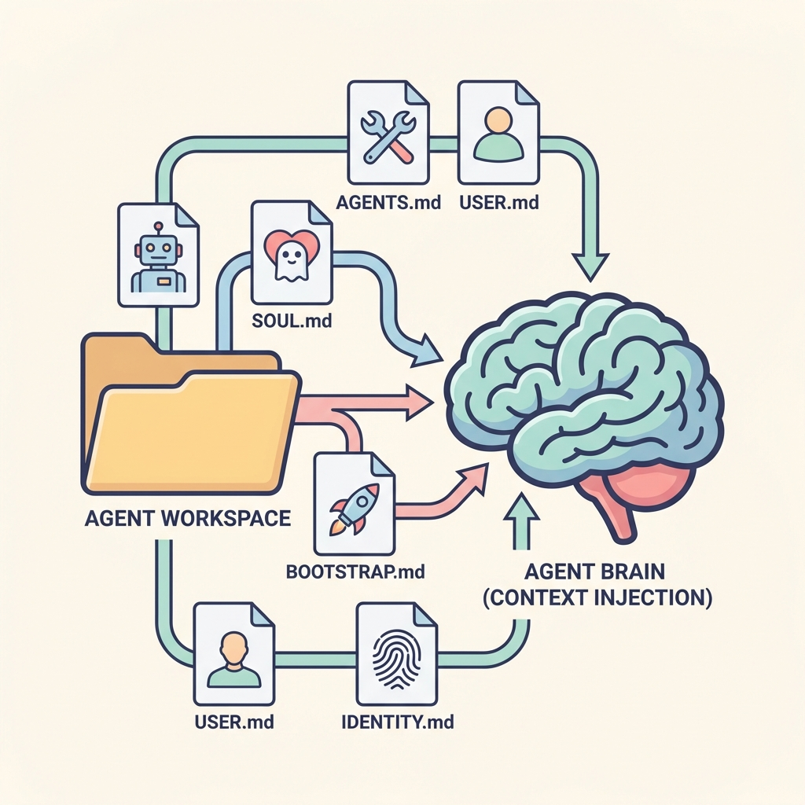

Lead: OpenClaw는 단일 내장 에이전트 런타임을 통해 워크스페이스, 부트스트랩 파일, 스킬 로딩 및 세션 관리를 일관되게 처리합니다. 이 글은 에이전트 런타임의 구성요소와 운영 중요사항을 기술합니다.
2026 02 02 Openclaw Agent Runtime
Lead: OpenClaw는 단일 내장 에이전트 런타임을 통해 워크스페이스, 부트스트랩 파일, 스킬 로딩 및 세션 관리를 일관되게 처리합니다. 이 글은 에이전트 런타임의 구성요소와 운영 중요사항을 기술합니다.
에이전트 런타임 개요
OpenClaw는 pi-mono에서 파생된 단일 내장 에이전트 런타임을 실행합니다. 에이전트는 단일 워크스페이스(agents.defaults.workspace)를 작업 디렉터리로 사용하며, 필요한 부트스트랩 파일들이 해당 워크스페이스에 존재해야 합니다.
워크스페이스와 부트스트랩 파일
워크스페이스에는 운영 및 페르소나를 정의하는 일련의 파일이 필요합니다:
AGENTS.md— 운영 지침 및 메모리SOUL.md— 페르소나(톤/경계)TOOLS.md— 도구 노트와 로컬 규약BOOTSTRAP.md— 최초 실행 의식(완료 시 삭제)IDENTITY.md— 에이전트 식별 정보USER.md— 사용자 프로필 및 선호사항
새 세션의 첫 턴에서 OpenClaw는 이 파일들의 내용을 에이전트 컨텍스트에 주입합니다. 파일이 없거나 비어 있으면 안전한 기본 마커/요약이 대신 주입됩니다.
내장 도구와 스킬 로딩
핵심 도구(read/exec/edit/write)는 도구 정책의 제약 하에 항상 사용 가능합니다. 스킬은 세 위치에서 로드됩니다: 번들, 사용자 관리(~/.openclaw/skills), 워크스페이스 내 skills 폴더. 스킬은 구성에 따라 게이트될 수 있습니다.
세션 저장 및 스트리밍 제어
세션 전사는 JSONL로 저장됩니다(~/.openclaw/agents/<agentId>/sessions/<SessionId>.jsonl).
큐 모드(steer, followup, collect)에 따라 들어오는 메시지의 주입 시점과 도구 호출의 처리 방식이 달라집니다. 블록 스트리밍 설정을 통해 응답 청크 크기와 경계를 조정할 수 있습니다.
모델 참조 규칙
모델 참조는 provider/model 형식을 권장합니다. OpenRouter 스타일 ID를 사용할 때는 provider 접두사를 포함하세요.
운영 체크리스트
agents.defaults.workspace설정 확인channels.whatsapp.allowFrom설정 권장- 부트스트랩 파일(AGENTS.md, SOUL.md 등) 준비
- 로그 및 세션 저장소 모니터링
참고 문서
- 원문: Agent Runtime — OpenClaw docs
(이 글은 OpenClaw 문서의 'Agent Runtime' 항목을 한글로 번역·정리한 것입니다.)